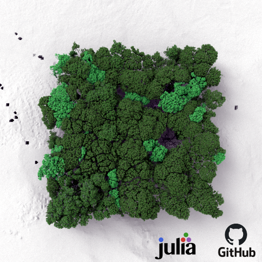
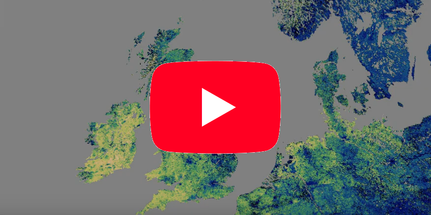

Radiative transfer simulation
Synthetic image generation
For the simulation of synthetic imagery, especially imaging spectroscopy data cubes, we are pleased to announce RenderJay, a new module for the Julia ecosystem.
Data assimilation
Daily bi-hemispherical reflectance in the near-infrared
Check out our daily MODIS albedo product. This product comes with associated confidence intervals and we have derived a suite of vegetation products from it, using the Joint Research Centre's Two-Stream Inversion package. Contact us for data availability for your area of interest!
Daily JRC-TIP eLAI
The effective Leaf Area Index using the Joint Research Centre's Two-Stream Inversion package, that we rewrote in Julia, enabling the use of Julia's handy auto-derivation tools for fast optimization. Contact us for data availability and any further details that you may be interested in.